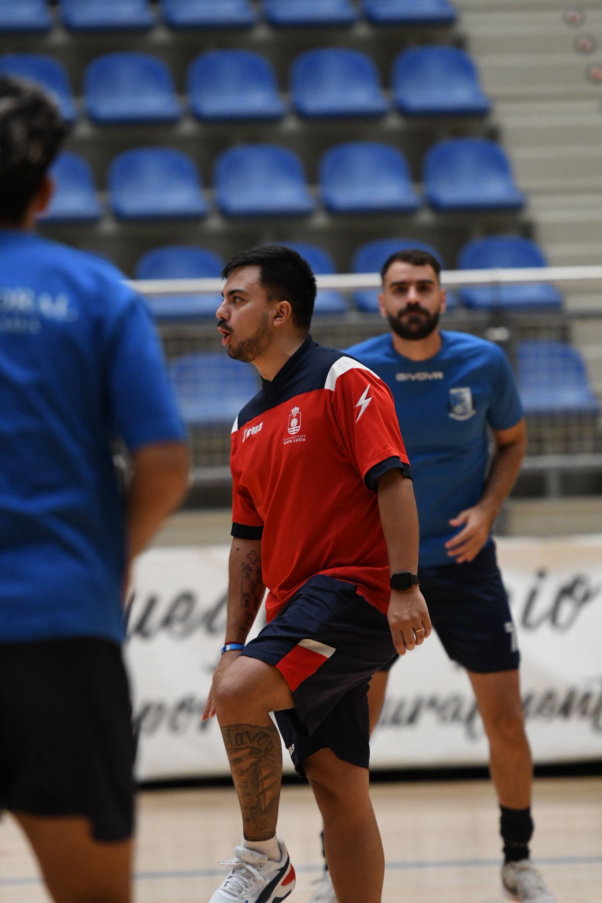

Material de entrenamiento y filosofía de trabajo: una planificación pensada para el deporte.

Soy Darío Blanco, profesor de Educación Física y entrenador de fútbol sala. Este espacio nació para compartir la forma en la que entiendo el entrenamiento: integrar la preparación física con la técnica, la táctica y la toma de decisiones, siempre al servicio del juego.
Durante años pensé que un buen entrenamiento era aquel en el que los jugadores terminaban agotados. Con el tiempo entendí que el objetivo no es cansarlos, sino construir jugadores y equipos capaces de entender lo que pasa dentro de la cancha.
Acá vas a encontrar manuales, videos de entrenamientos y ejercicios que uso en mi día a día — y voy a seguir sumando material con el tiempo.
"La preparación física va de la mano con el juego, nunca sin él." — Metodología y planificación de la pretemporada en el futsal amateur, pensada para equipos que entrenan tres o cuatro veces por semana, con tiempo y recursos limitados.
Descargá "La Preparación Física Integrada al Juego" con todos los capítulos, diagramas y fichas por semana.
Este mini manual nace de la necesidad de aportar algo específico al deporte amateur, sin pretender tener toda la verdad al respecto.
Durante mucho tiempo pensé que una buena pretemporada era aquella en la que los jugadores terminaban agotados después de cada sesión. Con los años descubrí que estaba equivocado: el verdadero objetivo no es cansar a los jugadores, sino crear equipos desde el inicio y construir jugadores capaces de entender el juego y responder a las situaciones que este les plantea.
No vas a encontrar acá una colección de ejercicios para copiar, ni una planificación para seguir al pie de la letra. Vas a encontrar una forma de entender la pretemporada: una metodología que sigo construyendo a partir del estudio, la experiencia y los errores que cometí como entrenador y profesor.
"La pretemporada empieza mucho antes del primer entrenamiento."
Reducir la pretemporada a la preparación física sería simplificar un proceso mucho más complejo. Es el momento en que un grupo de jugadores empieza a convertirse en equipo: el entrenador transmite una idea de juego, establece normas de trabajo y construye los hábitos que acompañarán al grupo durante toda la temporada.
Un equipo también necesita aprender a convivir, comunicarse, interpretar el juego y responder colectivamente a las situaciones que plantea un partido. Por eso entiendo la preparación física como una herramienta al servicio del rendimiento colectivo, y no como un fin en sí mismo.
Este manual está pensado para la realidad del futsal amateur: equipos que entrenan tres o cuatro veces por semana, con jugadores que trabajan o estudian, tiempo limitado y recursos escasos. No necesitamos entrenar más. Necesitamos entrenar mejor.
"No planifico entrenamientos. Planifico un proceso."
Antes de diseñar una sesión siempre respondo una pregunta: ¿cómo quiero que juegue mi equipo? La planificación nunca comienza con los ejercicios, comienza con una idea. Cuando el modelo de juego es claro, los ejercicios dejan de elegirse por costumbre y empiezan a elegirse por el comportamiento que generan.
No entreno ejercicios, entreno comportamientos: si quiero mejorar la presión tras pérdida, diseño tareas donde esa situación aparezca constantemente. El ejercicio deja de ser el protagonista; el protagonista es el comportamiento que buscamos entrenar.
Primero defino el objetivo del entrenamiento, después selecciono la tarea, y recién entonces ajusto las variables que determinan la carga: el espacio, la cantidad de jugadores, el tiempo de trabajo, las pausas y las reglas. La carga aparece como consecuencia de la tarea, no como el punto de partida.
"Una buena planificación no es la que tiene más contenido. Es la que presenta el contenido adecuado en el momento adecuado."
Propongo una planificación de seis semanas porque, dentro del futsal amateur, representa un tiempo suficiente para construir una base sólida sin prolongar innecesariamente el proceso. No es una fórmula obligatoria, sino una propuesta adaptable a cada contexto.
Cada semana debe responder a una necesidad diferente del equipo, siguiendo una secuencia: primero nos adaptamos, después construimos, más adelante nos consolidamos y finalmente competimos. Toda planificación, además, debe estar preparada para cambiar: lesiones, ausencias o cambios de calendario forman parte del trabajo cotidiano.
Estructura general de la pretemporada, semana a semana:
| Semana | Objetivo | Carga |
|---|---|---|
| 1 | Construir las bases — adaptación al entrenamiento | Baja → Media |
| 2 | Consolidar y progresar — mayor intensidad | Media → Alta |
| 3 | Consolidar una idea de juego | Alta |
| 4 | Del entrenamiento a la competición — primeros amistosos | Media-Alta + amistoso |
| 5 | Consolidar una identidad | Media-Alta + amistoso |
| 6 | Llegar listos para competir — tapering | Descenso progresivo |
Cada semana combina contenidos condicionales, técnicos, tácticos y psicológicos integrados con balón, siguiendo el sistema de colores del manual (amarillo: baja intensidad, naranja: media, rojo: alta, morado: pico competitivo). El detalle completo de cada sesión está en el PDF.
"Las mejores decisiones que tomo hoy nacieron de los errores que cometí ayer."
Con los años entendí que el cansancio desaparece en pocas horas, pero los hábitos permanecen toda la temporada. Hoy valoro mucho más a un equipo que entrena con intensidad, entiende el juego y sabe competir, que a uno que simplemente soporta grandes cargas de trabajo.
El entrenador también aprende: al otro día de cada sesión intento responder tres preguntas simples — ¿qué salió bien?, ¿qué podría haber hecho mejor?, ¿qué voy a cambiar en el próximo entrenamiento? Una buena pretemporada nunca garantiza el éxito, pero ofrece una base sólida sobre la que el equipo podrá crecer durante el año.
"La planificación termina cuando empieza el entrenamiento. A partir de ese momento, comienza la gestión del entrenador."
El primer entrenamiento no debe ser especial por la cantidad de ejercicios, sino por el mensaje que transmite: vamos a entrenar con intensidad, la pelota va a estar presente en casi todas las tareas, el error forma parte del aprendizaje y el compromiso es innegociable.
Diez ideas que intento no olvidar: la pelota debe estar presente siempre que sea posible; no entreno ejercicios, entreno comportamientos; la intensidad nace de la tarea; explicar menos suele enseñar más; el jugador aprende resolviendo problemas; la progresión vale más que la improvisación; y ningún resultado cambia una metodología en una semana.
Aplicación práctica de una pretemporada de seis semanas para un equipo amateur con cuatro sesiones semanales (adaptable a tres). Cada microciclo sigue la progresión: Adaptar → Construir → Consolidar → Transferir → Consolidar identidad → Competir.
La carga se organiza con un sistema de colores: amarillo para tareas de baja intensidad y adaptación, naranja para desarrollo y mayor volumen, rojo para tareas competitivas de alta intensidad, y un color especial para los partidos amistosos. El desarrollo completo de los seis microciclos, sesión por sesión, está disponible en el PDF descargable.